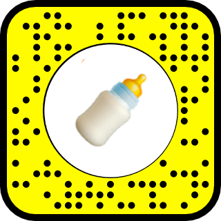
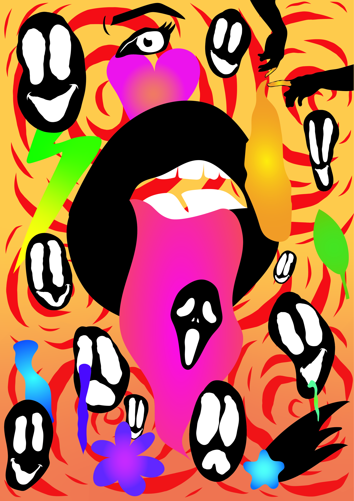
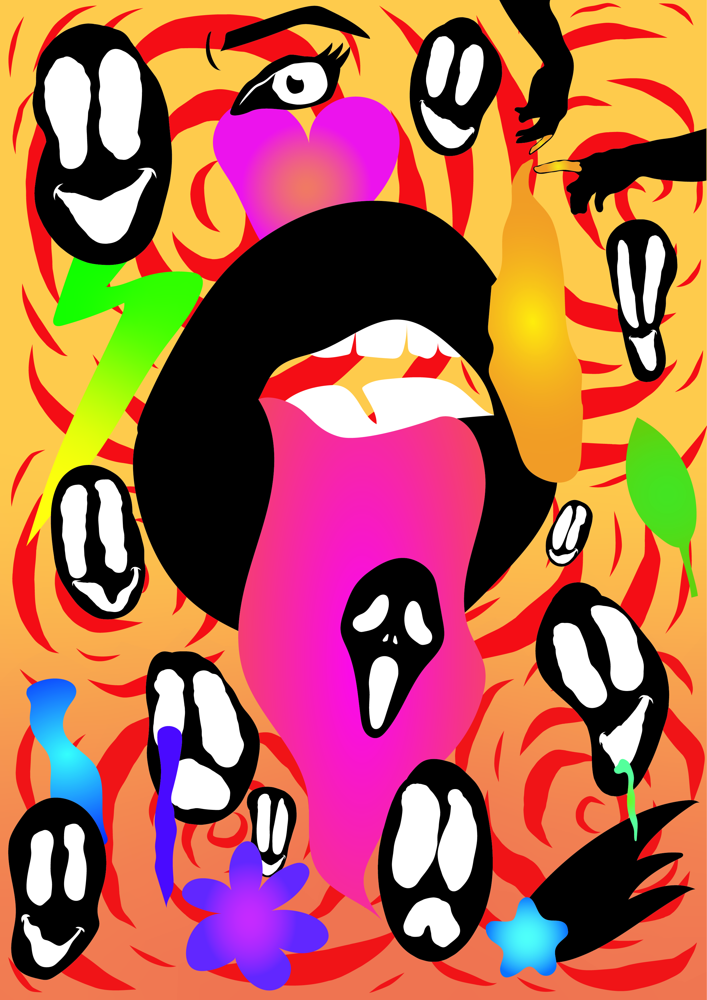

Een project waarbij ik een boekenzoeker heb moeten maken in de huisstijl van de gemeente Amsterdam, maar er toch een eigen draai aan heb gegeven.

Het doel van dit project was om visual research te kunnen doen op basis van sfeerwoorden. Deze sfeerwoorden heb ik gehaald vanuit het gekozen nummer waarvoor ik uiteindelijk de lyric video heb gemaakt. Met deze visual research heb ik ook twee lettertypes gemaakt voor de lyric video.
Voor een studiepunt heb ik snapchatlenzen gemaakt. De lenzen zijn gebaseerd op leuke memes die een tijdje populair waren of nog steeds zijn. De lenzen hebben ook veel views gekregen dus dat is erg leuk :)
 

Soms vind ik het leuk om in mijn vrije tijd mijn apple pennetje erbij te pakken en een leuke illustratie te maken d.m.v procreate en adobe illustrator.
Het voornamelijke doel van dit project was om professioneel te kunnen prototypen met nette html, css en JS. Ook hebben we nieuwe technieken geleerd om elementen aan te kunnen spreken, te kunnen positioneren en nog meer!